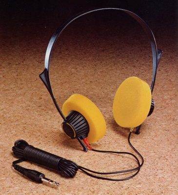
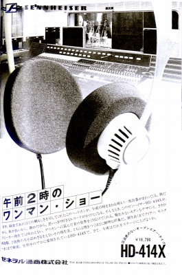
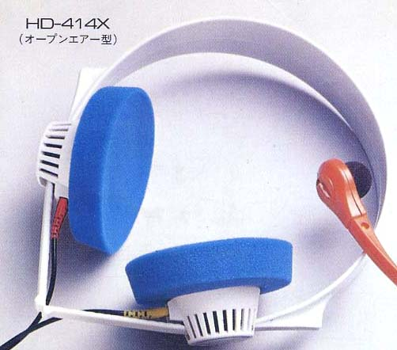
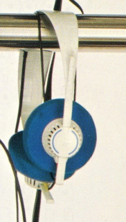

HD-414X


■価格 16,700円
■型式 ダイナミック型オープンエアタイプ
■振動板
■インピーダンス 2KΩ（32Ω）
■再生周波数帯域 20-20,000Hz
■許容入力 14Ｖ（2Ｖ）（電圧）
■感度 102ｄB/1.4Ｖ（102ｄB/0.2Ｖ）
■コード 3ｍ
■重量 135g（コード含まず）
■発売 1976年頃
■販売終了 1985年頃
■備考 スペックの（ ）付きはローインピーダンス仕様のもの
ローインピーダンス仕様はカプセルに半円の線
価格は1976年頃のもの
1984〜85年頃は18,800円
（414→414Ｘの変更点）
・2,000Hz付近のピーク値を若干下げた
・装着圧力増加
・ヘットバンドの長さ調節部分にステップがついた
本体には「X」は表記されていない為、また初期モデルには
白いモデルも存在し、ヘッドフォンが流行した70年代中盤以降のモデルなので
オークションで「オリジナル」とされる「414」のかなりの部分は「414Ｘ」と思われる

(白いヘッドバンドのHD-414X初期型 1978年頃の広告より）

(白いヘッドバンドのHD-414X初期型ローインピーダンス仕様）